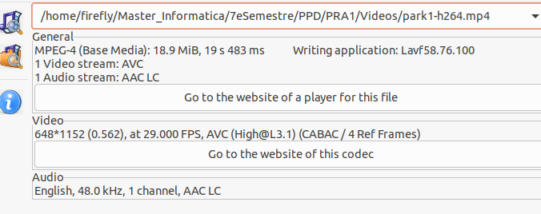
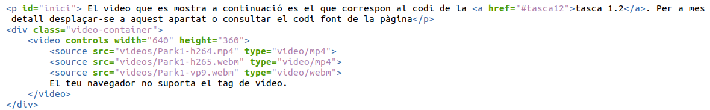

PRÁCTICA PLATAFORMES DE PUBLICACIÓ I DISTRIBUCIÓ UOC 1r SEMESTRE 2024
El video que es mostra a continuació es el que correspon al codi de la tasca 1.2. Per a mes detall desplaçar-se a aquest apartat o consultar el codi font de la pàgina
Tasca 1.1
Tria un clip de vídeo de màxim 20 segons (pots crear-lo amb el teu dispositiu mòbil, que tingui objectes en detall i en moviment) i codifica’l amb Avidemux triant el format i resolució que creguis adients per a la seva publicació en web. Tenint en compte que no tots els navegadors accepten tots els còdecs, codifica el vídeo en els formats necessaris per tal què sigui compatible amb el màxim de navegadors possible. Explica les decisions preses en la codificació i el perquè de cadascuna. Confirma amb l’eina MediaInfo que l’ha codificat a la velocitat que volies.
Es tria un vídeo de un parc d'atraccions de 19 segons perque te objectes diversos en detall i moviment. Es trien els format de codificació h264, h265 i VP9 per les següents raons:
- h264 (MPEG-4 AVC)
- Compatibilitat universal: h264 és àmpliament suportat per la majoria dels navegadors moderns, incloent Google Chrome, Mozilla Firefox, Microsoft Edge, Safari i Opera. Això assegura que el vídeo es pugui reproduir sense problemes a través de diferents plataformes i dispositius.
- Qualitat vs. Compressió: Ofereix una bona qualitat de vídeo mantenint una mida de fitxer relativament petita, el que és beneficiós tant per a l'usuari (menys consum de dades) com per al proveïdor de contingut (menys costos d'emmagatzematge i banda ampla).
- h265 (HEVC)
- Eficàcia de compressió: h265 és la versió millorada d'h264, oferint fins a un 50% millor compressió per a la mateixa qualitat de vídeo. Això és particularment útil per a vídeos en alta resolució (com 4K i 8K) perquè redueix significativament la mida dels fitxers.
- Compatibilitat creixent: Tot i que la compatibilitat d'h265 no és tan universal com la d'h264, està en augment. Navegadors moderns i dispositius més recents comencen a suportar aquest format de manera més consistent. Navegadors com Safari i Microsoft Edge ja suporten h265, mentre que Chrome i Firefox poden necessitar plugins addicionals o suport a través de HTML5 i JavaScript.
- WebM (VP8/VP9)
- Open Source i lliure de royalties: WebM és un format de vídeo desenvolupat per Google que utilitza els còdecs VP8 i VP9. Aquest format és lliure de royalties, el que és avantatjós per als desenvolupadors i distribuïdors de contingut.
- Compatibilitat amb navegadors: WebM és nativament suportat per Google Chrome, Mozilla Firefox, Opera i altres navegadors basats en Chromium. Això el fa ideal per a ús en entorns web on aquests navegadors són predominants.
- Qualitat vs. Compressió: VP9, en particular, ofereix una compressió comparable a h265, el que significa que pot oferir alta qualitat de vídeo amb mides de fitxer més petites, similar a h265.
Pel que fa a la resolució dels vídeos i dels fps donat que els fitxers no podien ser més grans de 25 Mb per al servidor que es va triar (Netlify, tasca 1.3 es van tenir que fer algunes adaptacions. El fitxer original es grabat amb movil amb resolució 1920x1080 i 29,4 fps, ocupava uns 50 Mb. Comprimit amb H.264 i H.265 sense més modificacions es podien arribar als 30-40 Mb màxim. Primer es va probar a afegir el filtre per baixar a 24 fps però el vídeo perdia fluïdesa clarament. Com a consecuencia per a les codificacions mencionades es va reduir el tamany a 1152x648 com es pot veure a la figura 1 amb el media info. Pel que fa a la webm el tamany (3 Mb) va ser prou petit per no haver de fer res més.
Figura 1.
Tasca 1.2
Crea la web. Genera un fitxer .html mitjançant un editor de text, incrusta-li el clip de vídeo codificat utilitzant el tag <video> d'HTML5 i prepara la web perquè pugui ser visualitzada des de la major part dels navegadors. Què caracteritza el format HTML5 en publicació i visualització d'un vídeo respecte d’altres mètodes de publicació?
Al inici d'aquesta pàgina es troba el següent codi (figura 2):
Figura 2.
Es pot probar visualitzant el propi codi font de la pàgina web actual. S'han possat com a sources els tres formats de video explicats a la tasca 1.1 per tal de fer la pàgina el més compatible possible.
Pel que fa al format HTML5 ha suposat una revolució en la publicació i visualització, per exemple, de vídeos a la web, i ofereix diversos avantatges respecte als mètodes més antics com Flash o plugins propietaris. Una de les seves característiques principals és la integració nativa amb els navegadors moderns, eliminant la necessitat d'instal·lar plugins addicionals, cosa que millora la compatibilitat i la seguretat.
L'etiqueta <video> d'HTML5 facilita la inserció de vídeos en pàgines web, permetent als desenvolupadors controlar la reproducció amb atributs senzills com `controls` o `autoplay`. A més, HTML5 és compatible amb diversos còdecs de vídeo, com H.264, H.265 i WebM, oferint flexibilitat per triar el format més adequat segons les necessitats de compatibilitat i qualitat.
HTML5 també destaca per la seva compatibilitat multi-plataforma, assegurant una experiència de visualització consistent en diferents dispositius, incloent-hi mòbils i tauletes. Això es complementa amb una millor eficiència en l'ús de recursos del sistema, cosa que resulta en una reproducció més suau i un menor consum de bateria, especialment en dispositius mòbils.
L'accessibilitat és un altre punt fort d'HTML5, gràcies a l'etiqueta <track>, que facilita la integració de subtítols i altres funcions accessibles. A més, la seva API de JavaScript, que no es farà servir en aquesta pràctica per simplicitat, permet un control programàtic extens de la reproducció, oferint més flexibilitat als desenvolupadors. En resum, HTML5 ofereix una solució més segura, eficient i accessible per a la publicació i visualització de vídeos a la web.
Tasca 1.3
Publica el fitxer .html i el vídeo en un servidor web gratuït o al CDN vist a la PAC1 (web estàtica) per tal de veure’l amb una adreça http pública i valora la experiència a nivell d’usuari/a (retard de visualització, qualitat, etc).